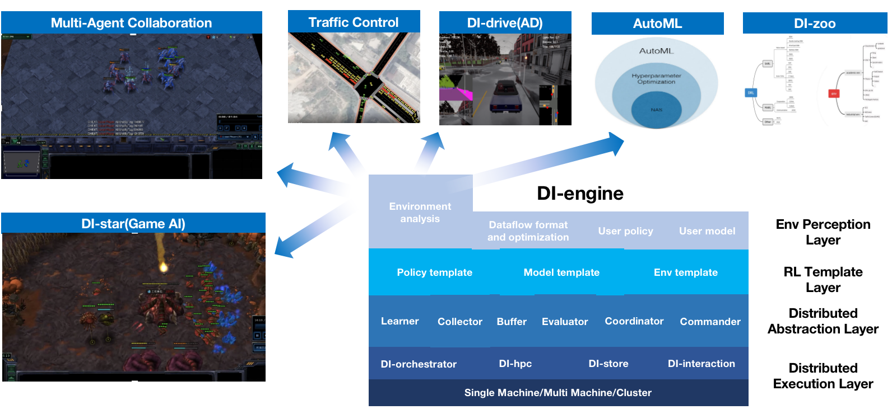

Welcome to DI-engine’s documentation!¶
{kind=link}
Overview¶
DI-engine is a generalized Decision Intelligence engine. It supports most basic deep reinforcement learning (DRL) algorithms, such as DQN, PPO, SAC, and domain-specific algorithms like QMIX in multi-agent RL, GAIL in inverse RL, and RND in exploration problems. The whole supported algorithms introduction can be found in Algorithm.
For scalability, DI-engine supports three different training pipelines:

serial
feature: single-machine, learner-collector loop executes sequentially
usage: academic research
parallel
feature: single-machine, learner and collector execute in parallel
usage: speed up serial pipeline and introduction to the whole distributed training
dist
feature: for GPU and CPU mixed computing clusters, learner-collector distributed execution
usage: large scale AI decision application, such as AlphaStar league training
Main Features¶
DI-zoo: High-performance DRL algorithm zoo, algorithm support list. Link
Generalized decision intelligence algorithms: DRL family, IRL family, MARL family, searching family(MCTS) and etc.
Customized DRL demand implementation, such as Inverse RL/RL hybrid training; Multi-buffer training; League self-play training
Large scale DRL training demonstration and application
Various efficiency optimization modules: DI-hpc, DI-store, EnvManager, DataLoader
k8s support, DI-orchestrator k8s cluster scheduler for dynamic collectors and other services
To get started, take a look over the quick start and API documentation. For RL beginners, DI-engine advises you to refer to hands-on RL for more discussion. If you want to deeply customize your algorithm and application with DI-engine, also checkout key concept and Feature.
User Guide
- Installation
- Quick Start
- Key Concept
- Introduction to RL
- RL Algorithm Cheat Sheet
- RL Environments Tutorial
- Distributed
- Best Practice
- How to migrate your environment to DI-engine
- N-step TD
- How to Use PER(Prioritized Experience Replay)
- Imitation Learning
- Inverse RL
- How to use RNN
- Random seed
- Multi-Discrete Example
- How to Use Multi-GPUs to Train Your Model
- How to randomly collect some data sample at the beginning?
- How to understand training generated folders?
- Learner log
- How to Customize Model Wrapper
- How to Customize an Env Wrapper
- How to use Episode Replay Buffer?
- How to use multiple buffers?
- Registry
- Multi-Agent Actor-Critic RL
- Customization 1: Dynamic Update Step
- API Doc
- FAQ
- Feature